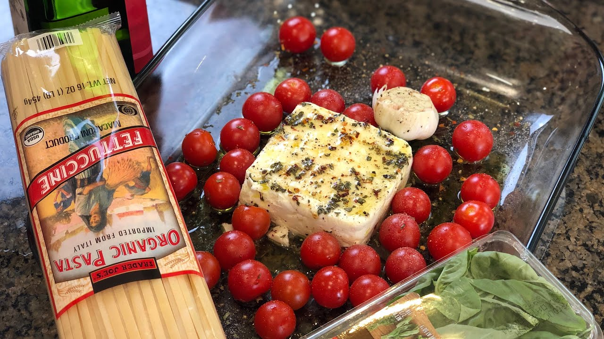

Pasta with tomatoes and feta cheese

Recipe
| Ingredients |
Amount |
| Cherry or grape tomatoes |
250-500 grams |
| Garlic |
4 cloves |
| Greek feta cheese |
200 grams |
| Dried pasta |
340 grams |
| Olive oil |
1/4 cup |
Cooking instruction
- STEP - Position a rack in the middle of the oven and preheat to 400 degrees.
- STEP - In a baking dish, combine the tomatoes, garlic and 1/4 cup of the olive oil. Sprinkle with some salt and toss to coat. Place the feta cheese in the center of the tomatoes and garlic, top with the remaining olive oil, and sprinkle the entire dish with black pepper. Bake for about 40 minutes, until the garlic has softened and the tomatoes have burst their skins.
- STEP - Meanwhile, bring a large pot of salted water to a boil. Cook the pasta according to package directions until al dente. Reserve 1 cup of the pasta water and then drain the pasta.
- STEP - Mash the feta and tomatoes with a fork and mix until evenly combined. Mix the sauce with pasta, adding the reserved pasta water as needed if it looks a little dry. Taste and season with additional salt and pepper, if desired.
Nutrition Information
- Calories: 718
- Total Fat: 40 g
- Saturated Fat: 12 g
- Cholesterol: 44 mg
- Sodium: 596 mg
- Carbohydrates: 66 g
- Dietary Fiber: 5 g
- Sugar: 8 g
- Protein: 19 g